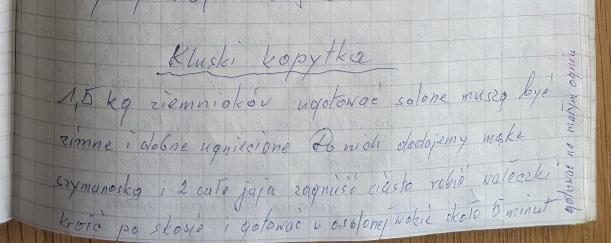

Kluski kopytka


Składniki
- 1,5 kg ziemniaków
- mąka szymanowska
- 2 całe jajka
- sól
Przygotowanie
- Ziemniaki ugotować w osolonej wodzie, ostudzić i dobrze ugnieść.
- Dodać mąkę szymanowską i 2 jajka, zagnieść ciasto.
- Robić wałeczki i kroić po skosie.
- Gotować w osolonej wodzie około 5 minut, na małym ogniu.
Oryginalny zapis
Kluski kopytka 1,5 kg ziemniaków ugotować solone muszą być zimne i dobrze ugniecione Do nich dodajemy mąkę szymanowską i 2 całe jaja zagnieść ciasto robić wałeczki kroić po skosie i gotować w osolonej wodzie około 5 minut [dopisek pionowo na marginesie: gotować na małym ogniu]